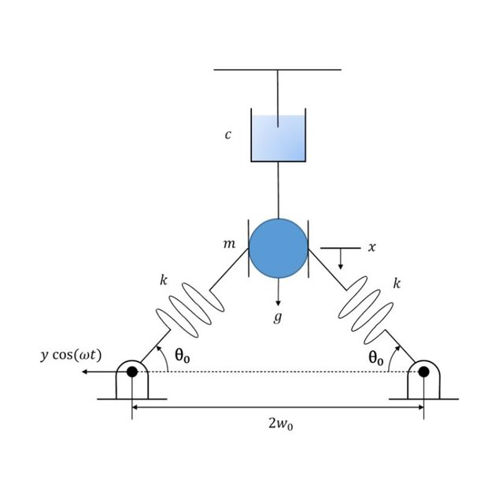
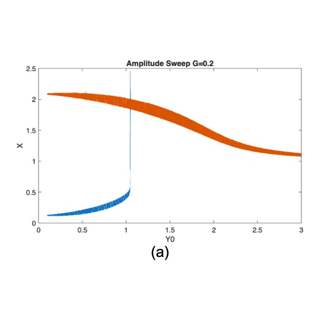
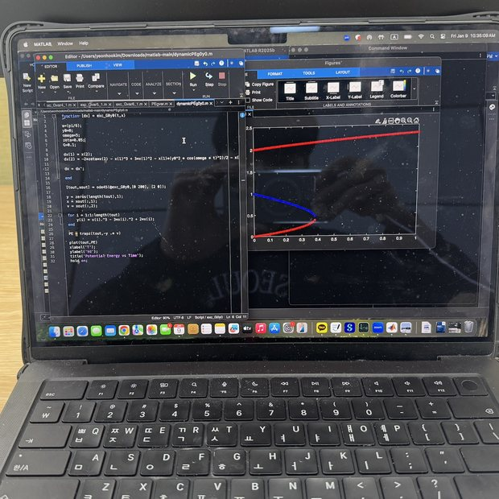
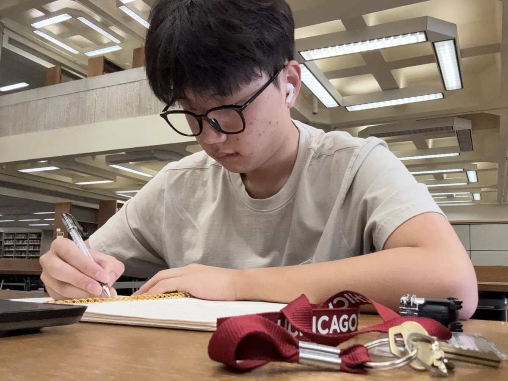
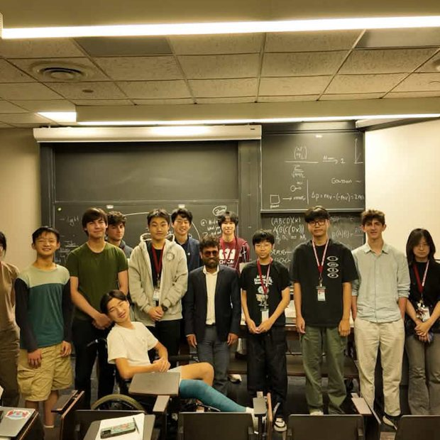

Working through the bi-stable and mono-stable cases at the lab.



Entry 1.1 · April 2025 — present · Advisor, Professor P. Kim, Jeonbuk University Poster accepted, GCIMM 2026 · Submitted, Journal of Emerging Investigators 2026
Asymmetric Monostable Behavior of an Elastic von Mises Truss Under Base Excitation
Research paper. Simulation built in MATLAB. Advised at Jeonbuk University. Poster accepted for presentation at GCIMM 2026; submitted to the Journal of Emerging Investigators, 2026.
A von Mises truss is about as simple as a structure gets: two straight bars, pinned at their outer ends, meeting at a shallow peak in the middle. Press down on that peak hard enough and the whole thing snaps through and inverts. Whether it springs back on its own or stays inverted is the difference between monostable and bistable behaviour, and it is why these trusses turn up in energy harvesters, vibration isolators and mechanical switches.
I became interested in the project while I was studying mechanical vibration. Reading through papers on bistable systems and forced vibration, I came across the paper by Ghoshal et al., which raised questions in me about testing conditions similar to theirs.
I was able to contact Professor P. Kim through a personal connection — he was a friend of my parents from the same university, and I got a chance to talk with him. After that first conversation I reached out on my own about studying nonlinear vibration. He gave me recorded lectures and homework so I could build up what I needed, starting from engineering mathematics like second-order ordinary differential equations and moving to nonlinear vibration itself, damping included.
The study is a simulation, built in MATLAB. The result was that a large enough constant biasing force transforms the symmetric bistable system — one OFF and two ON states — into an asymmetric monostable system with one OFF and one ON state, depending on both the amplitude and the frequency of the base excitation.
Most of the difficulty was MATLAB itself, which was new to me; I worked through tutorials until I could generate the results I wanted. There were also moments when unexpected results came out — large interwell motions where I had expected small oscillations — which pushed me to analyse the system more deeply.
Entry 1.2 · Grade 11 — present · IB Extended Essay, carried on as an individual investigation
Investigation on the Effect of Temperature Parameter on a Vibrating Cantilever System
Extended Essay in physics, still in revision. Research question: how does temperature affect the natural frequency of a stainless steel cantilever beam at a fixed length?
A cantilever is a beam clamped at one end and free at the other — a diving board. Displace the free end and it oscillates at a natural frequency set by its geometry and its stiffness. Stiffness is not a fixed property: heat a metal beam and its Young’s modulus falls, so the frequency it wants to ring at drifts with temperature.
The apparatus is deliberately cheap. A stainless steel ruler is clamped between two wooden blocks with G-clamps at the 15 cm mark, magnets are fixed at the free end, and a Hall-effect sensor reads the oscillation. The whole assembly goes into an oven, and readings run from room temperature up to 140 °C.
Two effects compete as the steel heats. The falling Young’s modulus lowers the frequency, and thermal expansion lengthens the beam slightly, which lowers it too — but across this range the expansion term is roughly eight times smaller, so the modulus dominates.
This began as my Extended Essay, but I have taken it past what the essay required and am still revising it as an individual investigation.

Working through the problem sets, Regenstein.

Entry 1.3 · July 2026 · University of Chicago, summer course · Grade: A
Gravitation to Levitation: Physics from Supernova to Superconductor
Three-week summer session at the University of Chicago, taught in the Kersten Physics Teaching Center. College credit, grade A.
The three weeks were a magnificent experience — a chance to keep discovering physics beyond the high school level, in a discussion setting, with people who are interested in the subject as much as I am — three weeks of discussion-based, university-style lectures. It confirmed my interest in physics and made me even more attracted to it.
The course ran the length of its own title, gravitation at one end and levitation at the other. Alongside the lectures we worked in groups on two presentations. The first was on the Hubble tension — the disagreement between two ways of measuring how fast the universe is expanding, one built from the cosmic distance ladder and one from the cosmic microwave background. The second was on blackbody radiation, starting from the question of where starlight actually comes from.
There were guest lectures too. The one I keep returning to was a graduate student’s lecture on dark matter and X-ray telescopes.
Entry 1.4 · 2026 — present · Stanford University via Coursera · Stanford Online via edX · Both in progress
Special Relativity and Quantum Mechanics
Understanding Einstein: The Special Theory of Relativity. Quantum Mechanics for Scientists and Engineers 1. Taken alongside IB Year 2.
I came back from the three weeks in Chicago wanting more of that level, so I signed up for two college-level courses and have been working through them alongside IB Year 2.
Special relativity begins from two assumptions — that the laws of physics look identical to anyone moving at constant velocity, and that light travels at the same speed no matter who measures it — then follows them without flinching, until time dilation, length contraction and the mass–energy relation arrive as consequences rather than as separate discoveries.
The quantum mechanics course is the first half of a two-part sequence: wavefunctions, the Schrödinger equation, particles in wells and against barriers. It is the machinery that has to be in place before any application makes sense.